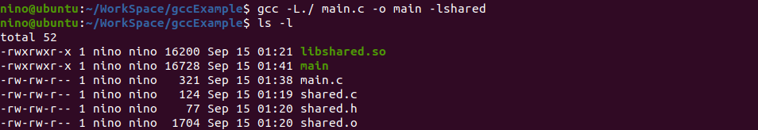
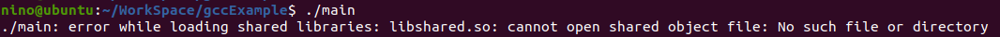
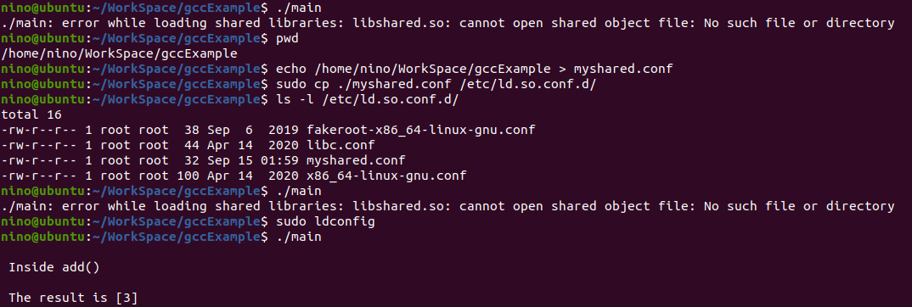
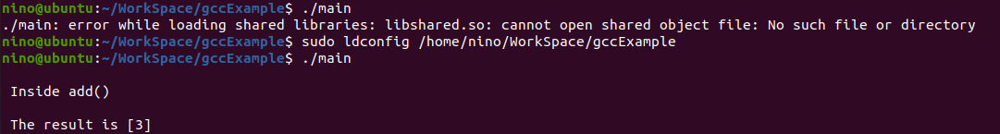
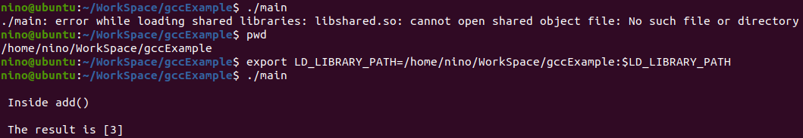

Linux 共享库简介（怎样创建共享库）
前言
一个库文件由多个不同的目标文件填充组成，众所周知，目标文件是由源代码经过编译得到的二进制中间文件，所以库文件中也是一系列已经编译好二进制代码，而它可能包含着在特定上下文中使用的一组函数。例如，当我们需要用到多线程中所提供的函数时， pthread 库就会被用到。
宽泛地讲，一个库（或者说程序库）有两种类型：
- 1、共享库
- 2、静态库
在这篇文章中我们将专门讨论共享库。
什么是共享库
一句话讲，共享库就是可以在运行时链接到任何程序的库，它们提供了一种使用加载到内存中任意位置代码的方法。一旦共享库被加载到内存，它就可以被任意数量的程序来使用。通过这种方式，大量的代码以共享库的形式被其他程序共用，所以程序本身的大小和其占用的内存都会保持在很低的状态。
共享库为开发环境提供了模块化的特性，因为库代码在修改或者重新编译后，只要其提供的接口没变，使用该库的用户程序是不需要重新编译的。例如，在修改了 pthread 库中的代码之后，使用 pthread 共享库的代码是不需要做任何修改的。
在 Linux 系统中，一个共享库通过不同的名字来访问：
- 链接器名称：lib 后面接库的名字，再接 .so 。例如 libpthread.so 。
- 完全限定的soname：lib 后接库的名字，再接 .so，再接 . 和一个主版本号。例如 libpthread.so.1 。
- 真实名称： lib 后接库的名字，再接 .so，再接 . 和一个主版本号，再接一个 . 和次版本号，再接一个 . 和一个发布版本号，其中发布版本号是可选的。例如 libpthread.so.1.1 。
当共享库中代码的修改使得与之前的版本不再兼容的时候，主版本号就应该跟着改变。例如，如果一个函数被完全移除了，则需要修改主版本号生成共享库一个新的版本。
当共享库中代码的修改使得与之前的版本还是兼容的，则只需要改变次版本号。例如，修复一个小 bug 是不会破坏当前共享库的兼容性的，所以只需要改变次版本号，而主版本号保持不变即可。
现在你可能会好奇为什么一个共享库有这么多名称呢？
！！！这种命名约定帮助同一个共享库的多个版本可以在系统中共存。链接共享库的程序不需要去考虑安装在系统中最新版本的库文件，一旦共享库的最新版本被成功安装到系统中，所有的程序都可以自动地链接到最新的版本。
共享库在文件系统中的位置
在 Linux 文件系统中，主要有三个可以放置库的标准位置。
- /lib
- /usr/lib
- /usr/local/lib
根据文件系统层次结构标准（FHS），所有在启动时加载并且在根文件系统中运行的库都被保存在 /lib 目录中；而系统内部使用的库存储在 /usr/lib 目录中，这些库并不是为了让用户或者 shell 脚本直接使用的；还有第三个位置 /usr/local/lib （尽管这个位置没有被定义在 FHS 的最新标准中），如果这个文件夹存在的话，那么它包含所有不属于标准发行版的库。这些非标准的库是你自己下载的库，而且它们是可能有 bug 的。
使用 ldconfig 命令
一旦一个共享库被创建出来，将其复制到相应的目录中（如 /usr/lib 或者 /usr/local/lib 中）。然后在对应的目录中运行 ldconfig 命令。那么 ldconfig 命令做了什么呢？
在之前有提到一个共享库有三种名称，链接器名称、完全限定的 soname 和真实名称。其中共享库的链接器名称是一个指向完全限定的 soname 的符号链接，而完全限定的 soname 是一个指向真实名称的符号链接。其实 ldconfig 正是干了这件事，创建符号链接。
当你运行一个 ELF 可执行文件的时候，默认情况下装载器是第一个被运行的，装载器本身也是一个共享目标文件 /lib/ld-linux.so.X，其中 .X 是一个版本号，这个装载器然后会找到并且装载所有我们程序所依赖的共享库文件。为了找到依赖库，所有装载器搜索的目录都保存在 /etc/ld.so.conf 中。搜索指定在 /etc/ld.so.conf 文件中的所有目录是非常耗时的，所以每次运行 ldconfig 命令，都会建立所需要的符号链接，然后在 /etc/ld.so.cache 文件中创建一个可执行文件所需要的所有信息的高速缓存，从缓存中读取信息可以大大减少时间消耗。但这里的问题是，每次添加或者删除共享库的时候都需要运行 ldconfig 命令，所以在程序启动的时候都会使用 /etc/ld.so.cache 去加载程序所依赖的库。
使用非标准库位置
当使用非标准库位置（即不把你的动态库安装到）的时候，可以使用以下三种方法中的一个：
1、将路径加到文件 /etc/ld.so.conf 中，该文件包含装载器搜索依赖库的所有目录的路径。
有时候这个文件可能只包含单单一行如下：
在这种情况下，只需要创建一个配置文件在同样的目录下，然后运行 ldconfig 即可。
2、通过如下命令直接添加一个目录到高速缓存文件中：
1 | sudo ldconfig [non standard directory path containing shared library] |
3、设置环境变量 LD_LIBRARY_PATH，以指向包含共享库的目录，装载器将使用此环境变量中提到的路径来解析依赖项。
示例（如何创建一个共享库）
接下来通过一个简单的示例来展示如何创建和使用共享库文件。下面是我们希望放在共享库中的代码（shared.c）：
1 |
|
shared.h 如下：
1 |
|
首先我们将 shared.c 编译打包成一个共享库文件。
1、运行以下两条命令来创建一个共享库：
1 | gcc -c -Wall -Werror -fPIC shared.c |
第一条编译命令将源代码编译成共享库需要得位置无关代码；第二条编译命令则真正的创建了共享库 libshared.so。
2、下面是使用共享库中 add 函数的用户代码
1 |
|
3、接下来运行如下命令：
1 | gcc -L./ -Wall main.c -o main -lshared |
这个编译命令编译 mian.c 中的代码并且告诉 gcc 去链接共享库 libshared.so 中的代码（通过使用编译选项 -l），而且告诉编译器共享库文件的位置（通过编译选项 -L）。
编译过后，可以看到当前文件夹下的文件如下：

4、如果直接运行可执行文件 main，则会报装载错误，如下：

无法找到共享库 libshared.so ！！！所以接下来我们需要根据第四点中提到的那样配置路径。
当然我们可以直接将共享库 libshared.so 复制到 /usr/lib 或者 /lib 中，就不需要配置路径运行 main 了。
然后我们也可以通过增加路径配置文件到 /etc/ld.so.conf.d 文件夹下，然后运行 ldconfig命令生成缓存来完成路径配置，操作步骤如下：

当然我们也可以通过直接用 ldconfig 命令指定路径来刷新缓存，操作步骤如下：

还可以通过修改环境变量来配置路径，但是这个是临时的，关闭 shell 重启则失效了，操作步骤如下：
